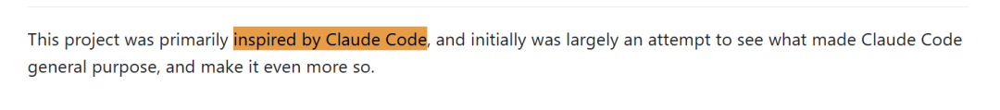
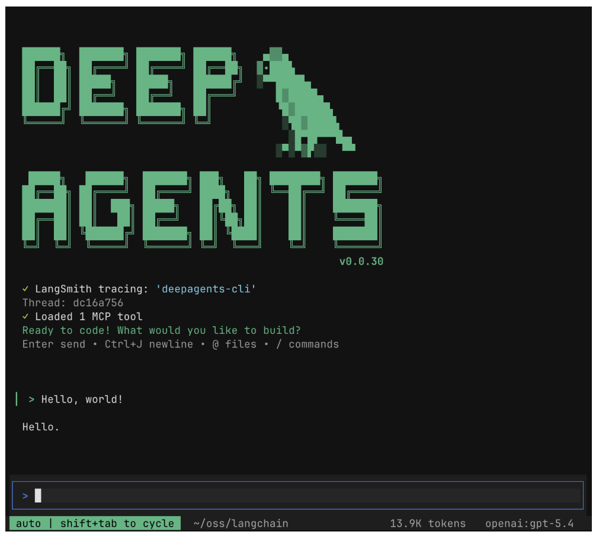
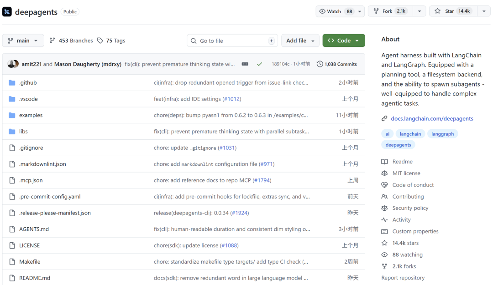
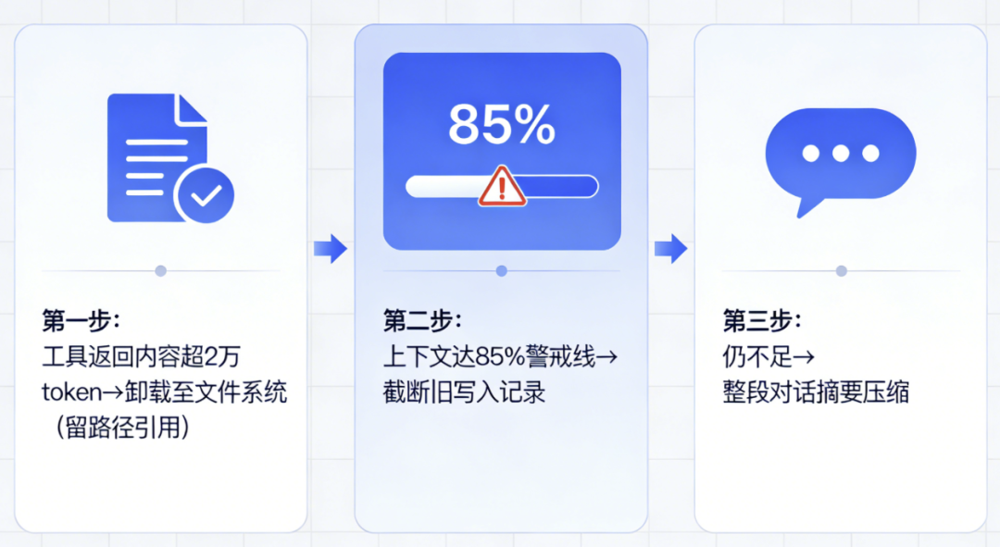
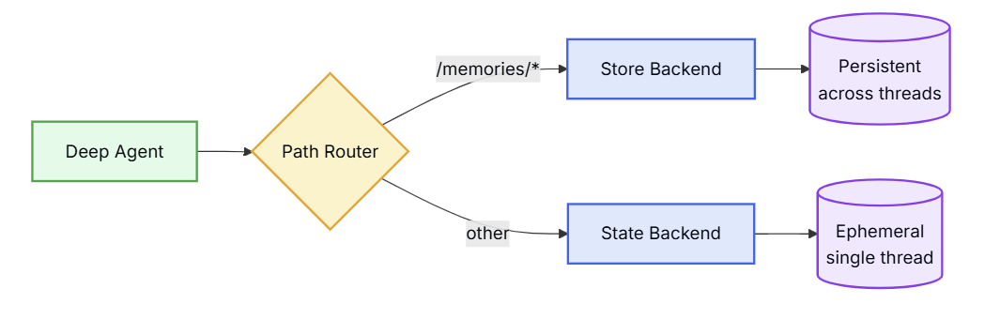
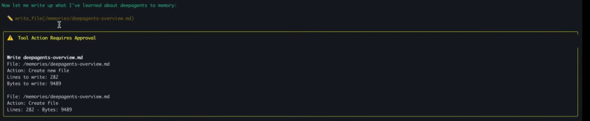

说个事。
最近在折腾 AI Agent，想搞一个能自己规划任务、读写文件、还能拆分子任务的自动化助手。
听起来不难对吧。
自己从头搭的话，prompt 要写，工具要接，上下文管理要做，子任务调度要设计。搞下来少说两三周，还不一定稳。
后来在 GitHub 上刷到了 LangChain 官方出的一个项目，叫 Deep Agents。README 第一句话写着"inspired by Claude Code"。

我心想，行，抄作业抄到明面上了，倒是坦诚。
项目介绍
Deep Agents 是 LangChain 团队做的开源 Agent Harness，底层跑在 LangGraph 上。

说人话就是：它帮你把 prompt、工具、上下文管理这些脏活全干了，你拿过来就是一个能用的 Agent。Python 写的，MIT 协议，三行代码就能跑起来。
模型随便换。OpenAI、Anthropic、Ollama、NVIDIA，只要支持 tool calling 的模型都能接。
开源成就
目前已经拿到 14.4K Star，2100 多个 Fork。

值得说的几个点
我之前自己搭 Agent，最头疼的就是跑长任务。任务一复杂，token 就爆，Agent 就开始忘事，前面做了什么全不记得了。 Deep Agents 专门为这个问题设计了三层压缩机制。工具返回的大段内容超过 2 万 token，自动卸载到文件系统，留个路径引用；上下文到了 85% 警戒线，开始截断旧的写入记录；再不够用，就整段对话摘要压缩。

Agent 自己知道去哪找之前的内容。 这套东西让它能真正跑几小时的长任务，不是说说而已。 然后文件系统后端是可以换的。这个我觉得才是跟 Claude Code 真正拉开差距的地方。
文件系统后端是可以换的。目前比Claude Code要牛X。本地磁盘、LangGraph Store、S3，哪怕你自己写一个接任何数据库，都行。你可以把 /memories/ 目录单独挂到 S3，让 Agent 的记忆跨机器持久化。


安装指南
Python ：
pip install deepagents
或者用 uv：
uv add deepagents
CLI 版本一行脚本装：
curl -LsSf https://raw.githubusercontent.com/langchain-ai/deepagents/main/libs/cli/scripts/install.sh | bash
注意，模型的 API Key 要用自己的，自己配上去。
//终端执行
deepagents
终端里就是一个交互式 Agent，跟 Claude Code 的用法基本一样。
GitHub 项目地址：https://github.com/langchain-ai/deepagents